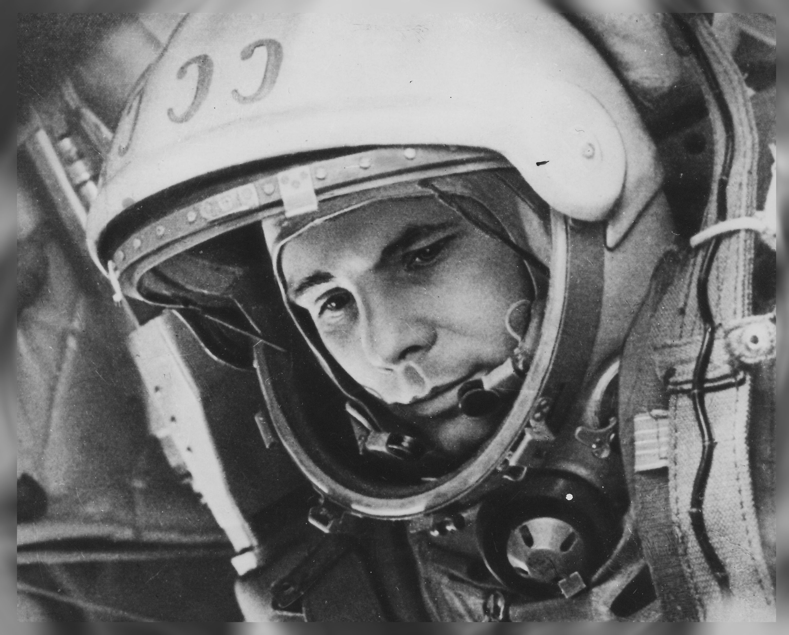

Юрий Алексеевич Гагарин
Облетев Землю в корабле-спутнике, я увидел, как прекрасна наша планета. Люди, будем хранить и приумножать эту красоту, а не разрушать её!
Советский лётчик Юрий Гагарин 12 апреля 1961 года стал первым человеком в мире, совершившим полёт в космос. На космическом корабле «Восток» он впервые в мировой истории совершил орбитальный облет Земли, открыв эпоху пилотируемых космических полётов.
Ю́рий Алексе́евич Гага́рин (9 марта 1934, Клушино, Гжатский (ныне Гагаринский) район, Западная область, СССР — 27 марта 1968, возле села Новосёлово, Киржачский район, Владимирская область, СССР) — лётчик-космонавт СССР, Герой Советского Союза, кавалер высших знаков отличия ряда государств, почётный гражданин многих российских и зарубежных городов.
Биография
ДАТА И МЕСТО РОЖДЕНИЯ: Родился 9 марта 1934 года в городе Гжатск (ныне Гагарин) Гжатского (ныне Гагаринского) района Смоленской области в семье колхозника. Отец - Алексей Иванович Гагарин. Мать - Анна Тимофеевна Гагарина.
СЕМЕЙНОЕ ПОЛОЖЕНИЕ: Жена - Валентина Ивановна Гагарина (в девичестве Горячева). Дети: дочери Елена (р. 10 апреля 1959 г.) и Галина (р. 7 марта 1961 г.).
ОБРАЗОВАНИЕ: 1951 г. - ремесленное училище № 10 в г. Люберцы (Московская область) по специальности формовщика-летейщика (с отличием); 1951 г. - школа рабочей молодежи в г. Люберцы (Московская область); 1955 г. - Саратовский индустриальный техникум (с отличием); 1955 г. - Саратовский аэроклуб; 1957 г. - Первое Чкаловское военное авиационное училище летчиков имени К.Е.Ворошилова в городе Оренбурге (по первому разряду); 1968 г. - Военно-инженерная академия имени Н.Е.Жуковского в Москве (с отличием).
СЛУЖБА В СОВЕТСКОЙ АРМИИ: С 1955 г. - в рядах Советской Армии. С 1957 года до зачисления в отряд космонавтов служил летчиком- истребителем в истребительном авиационном полку Северного флота. Имел квалификацию "Военный летчик 1-го класса".
КОСМИЧЕСКАЯ ДЕЯТЕЛЬНОСТЬ: С 1960 года - в отряде космонавтов (Приказ Главнокомандующего ВВС о зачислении от 3 марта 1960 года; фактически с 11 марта 1960 года). 12 апреля 1961 г. совершил первый в мире полет в космос на космическом корабле "Восток" продолжительностью 1 час 48 минут. С 23 мая 1961 года - командир отряда космонавтов. С 20 декабря 1963 года - заместитель начальника Центра подготовки космонавтов. Дублер пилота космического корабля "Союз" (Владимир Михайлович КОМАРОВ) при старте 23 апреля 1967 года.
ОБЩЕСТВЕННАЯ ДЕЯТЕЛЬНОСТЬ: Депутат Верховного Совета СССР 6-го и 7-го созывов. Член ЦК ВЛКСМ (избирался на 14-м и 15-м съездах ВЛКСМ). Руководитель внештатного отдела космонавтики газеты "Красная Звезда" (с 1964 г.). Президент Общества советско-кубинской дружбы. Почетный член Общества "Финляндия - СССР". С миссией мира и дружбы посетил многие страны мира.
ДАТА И МЕСТО ГИБЕЛИ: Трагически погиб 27 марта 1968 года в авиационной катастрофе вблизи деревни Новоселово Киржачского района Владимирской области при выполнении тренировочного полета на самолете. Похоронен у Кремлевской стены на Красной площади в Москве.
"Интеллектуальное развитие у Юрия высокое. Прекрасная память. Выделяется среди товарищей широким объемом внимания, сообразительностью, быстрой реакцией. Усидчив. Тщательно готовится к занятиям и тренировкам. Умело манипулирует формулами небесной механики и высшей математики. На собраниях вносит дельные предложения. Постоянно уверен в себе, в своих силах. Уверенность всегда устойчива. Его очень трудно, по существу невозможно, вывести из состояния равновесия. Настроение обычно немного приподнятое, вероятно, потому, что у него юмором, смехом до конца полна голова. Вместе с тем трезворассудителен. Наделен беспредельным самообладанием. Тренировки переносит легко, работает результативно. Развит весьма гармонично. Любит зрелища с активным действием, где превалирует героика, воля к победе, дух соревнования. В спортивных играх занимает место инициатора, вожака, капитана команды. Как правило, здесь играют роль его воля к победе, выносливость, целеустремленность, ощущение коллектива. Любимое слово - "работать". Чистосердечен. Чист душой и телом, вежлив, тактичен, аккуратен до пунктуальности. Любит повторять: "Как учили!". Скромен. Смущается, когда "пересолит" в своих шутках. Не стесняется отстаивать точку зрения, которую считает правильной. Похоже, что знает жизнь больше, нежели его некоторые товарищи. Отношения с женой нежные, товарищеские".
- Юрий Гагарин увековечен в скульптурной композиции «Павший астронавт» — первой и пока единственной художественной инсталляции на Луне.
- Американские астронавты, побывавшие на Луне, оставили там памятные медали с изображением людей, отдавших жизнь освоению космоса — Юрия Гагарина, Владимира Комарова, Вирджила Гриссома, Эдварда Уайта и Роджера Чаффи.
- Именем Юрия Гагарина назван кратер на обратной стороне Луны.
- В честь Юрия Гагарина назван астероид.
Ссылки